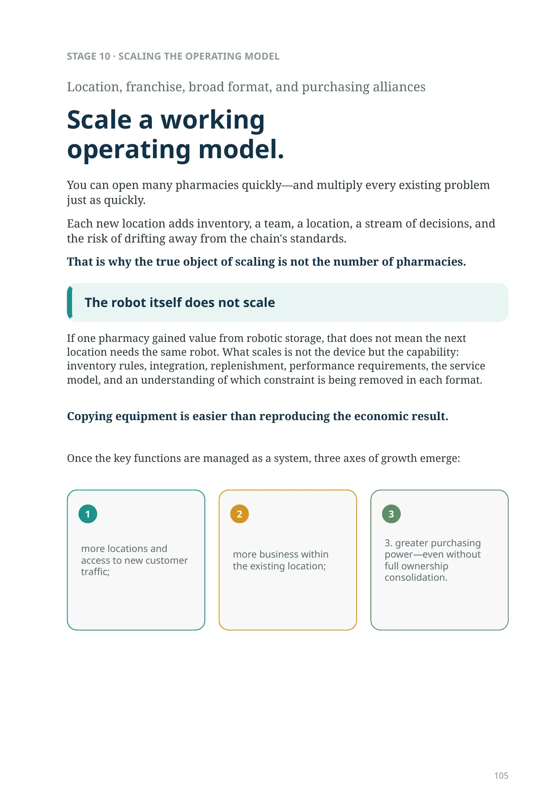
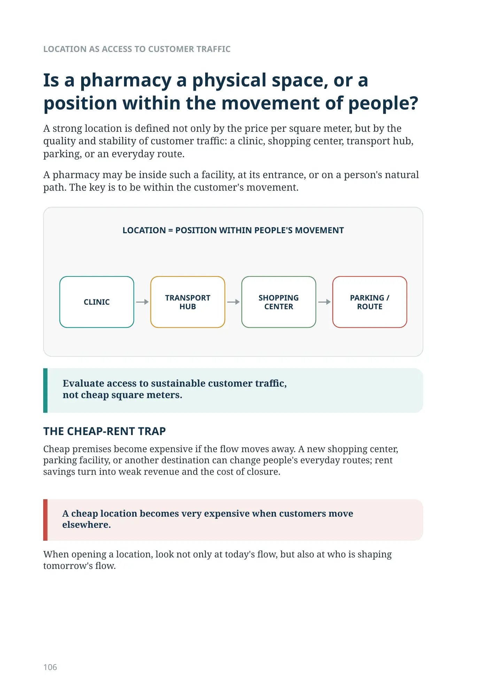
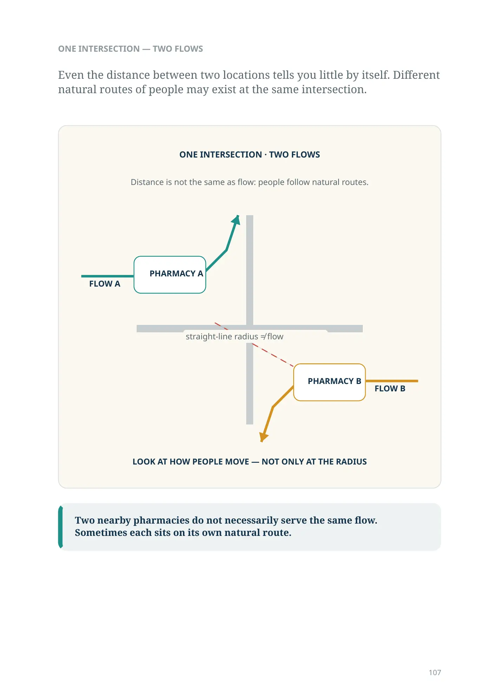
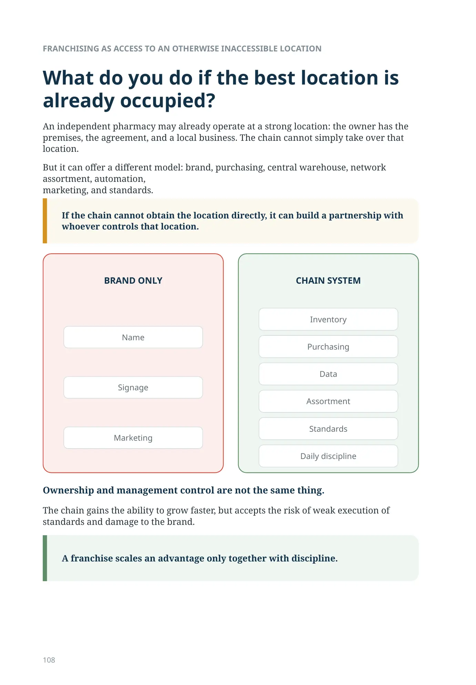
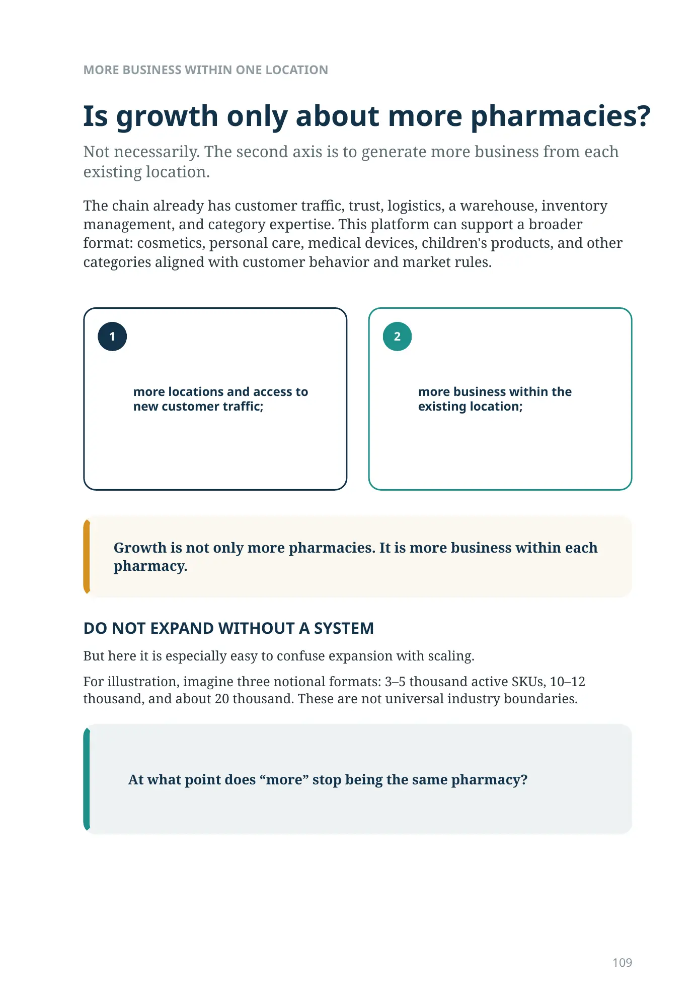
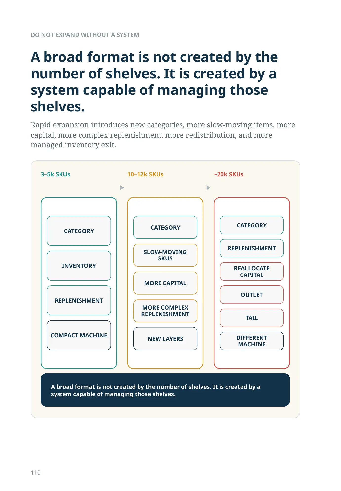
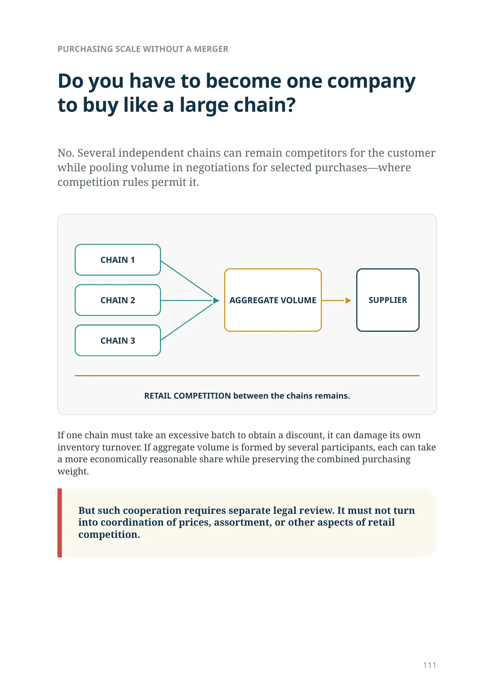
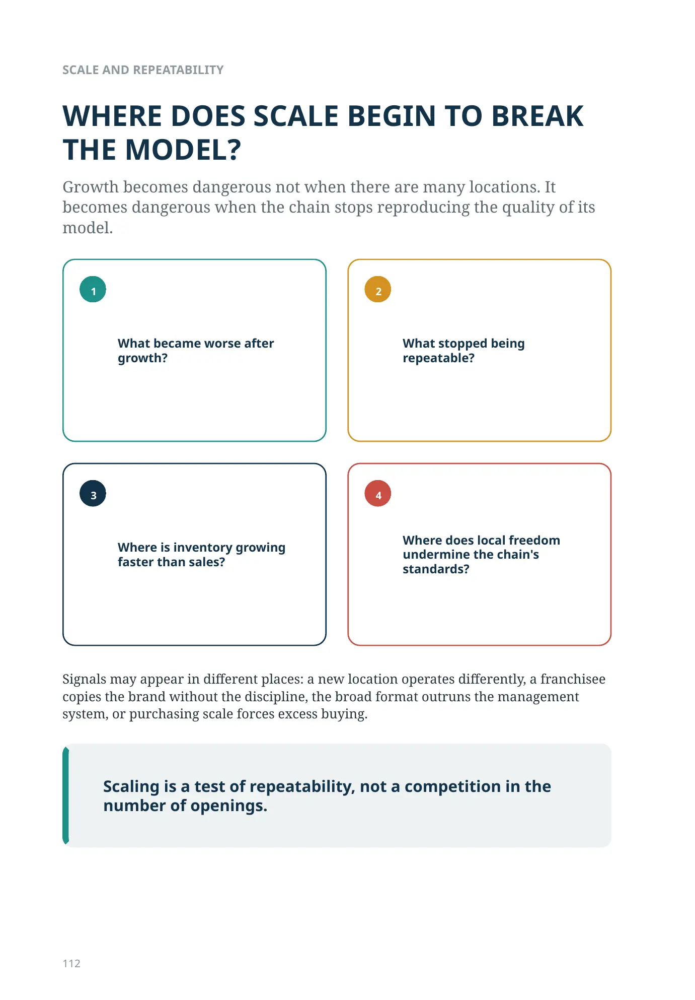
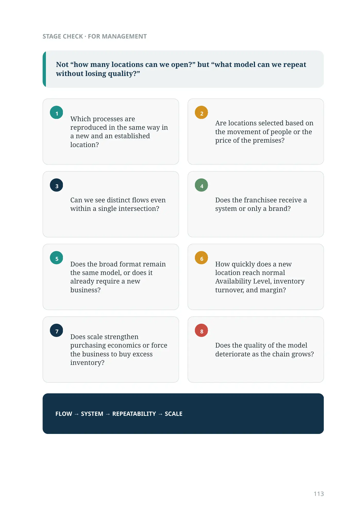
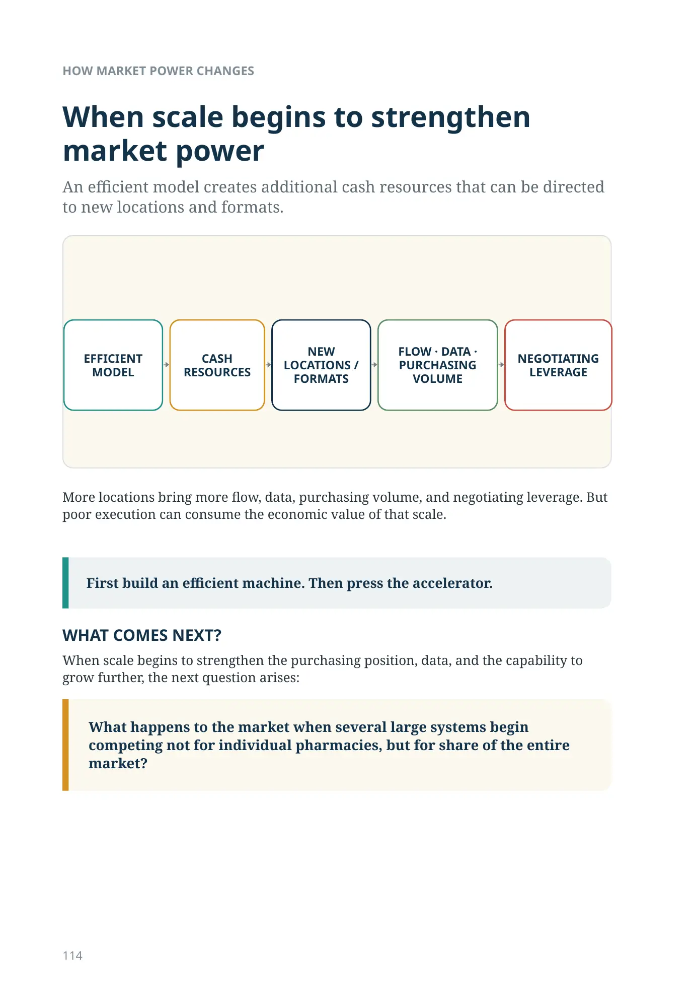

What exactly are you going to scale?
STAGE 10 · SCALING THE OPERATING MODEL
Location, franchise, broad format, and purchasing alliances
You can open many pharmacies quickly—and multiply every existing problem just as quickly.
Each new location adds inventory, a team, a location, a stream of decisions, and the risk of drifting away from the chain's standards.
That is why the true object of scaling is not the number of pharmacies.
Scale a working operating model.
The robot itself does not scale
If one pharmacy gained value from robotic storage, that does not mean the next location needs the same robot. What scales is not the device but the capability: inventory rules, integration, replenishment, performance requirements, the service model, and an understanding of which constraint is being removed in each format.
Copying equipment is easier than reproducing the economic result.
Once the key functions are managed as a system, three axes of growth emerge:
- more locations and access to new customer traffic;
- more business within the existing location;
3. greater purchasing power—even without full ownership consolidation.
LOCATION AS ACCESS TO CUSTOMER TRAFFIC
Is a pharmacy a physical space, or a position within the movement of people?
A strong location is defined not only by the price per square meter, but by the quality and stability of customer traffic: a clinic, shopping center, transport hub, parking, or an everyday route.
A pharmacy may be inside such a facility, at its entrance, or on a person's natural path. The key is to be within the customer's movement.
Evaluate access to sustainable customer traffic,
not cheap square meters.
THE CHEAP-RENT TRAP
Cheap premises become expensive if the flow moves away. A new shopping center, parking facility, or another destination can change people's everyday routes; rent savings turn into weak revenue and the cost of closure.
A cheap location becomes very expensive when customers move elsewhere.
When opening a location, look not only at today's flow, but also at who is shaping tomorrow's flow.
ONE INTERSECTION — TWO FLOWS
Even the distance between two locations tells you little by itself. Different natural routes of people may exist at the same intersection.
ONE INTERSECTION · TWO FLOWS
Distance is not the same as flow: people follow natural routes.
FLOW A → PHARMACY A → continuation of Flow A's natural route.
FLOW B → PHARMACY B → continuation of Flow B's natural route.
straight-line radius ≠ flow
LOOK AT HOW PEOPLE MOVE — NOT ONLY AT THE RADIUS
Two nearby pharmacies do not necessarily serve the same flow. Sometimes each sits on its own natural route.
FLOW APHARMACY AFLOW BPHARMACY BFRANCHISING AS ACCESS TO AN OTHERWISE INACCESSIBLE LOCATION
What do you do if the best location is already occupied?
An independent pharmacy may already operate at a strong location: the owner has the premises, the agreement, and a local business. The chain cannot simply take over that location.
But it can offer a different model: brand, purchasing, central warehouse, network assortment, automation,
marketing, and standards.
If the chain cannot obtain the location directly, it can build a partnership with whoever controls that location.
Ownership and management control are not the same thing.
The chain gains the ability to grow faster, but accepts the risk of weak execution of standards and damage to the brand.
A franchise scales an advantage only together with discipline.
Franchise: logo or system?
- Name
- Signage
- Marketing
- Inventory
- Purchasing
- Data
- Assortment
- Standards
- Daily discipline
MORE BUSINESS WITHIN ONE LOCATION
Is growth only about more pharmacies?
Not necessarily. The second axis is to generate more business from each
existing location.
The chain already has customer traffic, trust, logistics, a warehouse, inventory management, and category expertise. This platform can support a broader format: cosmetics, personal care, medical devices, children's products, and other categories aligned with customer behavior and market rules.
new customer traffic;
existing location;
Growth is not only more pharmacies. It is more business within each pharmacy.
DO NOT EXPAND WITHOUT A SYSTEM
But here it is especially easy to confuse expansion with scaling.
For illustration, imagine three notional formats: 3–5 thousand active SKUs, 10–12 thousand, and about 20 thousand. These are not universal industry boundaries.
At what point does “more” stop being the same pharmacy?
Rapid expansion introduces new categories, more slow-moving items, more capital, more complex replenishment, more redistribution, and more managed inventory exit.
A broad format is not created by the number of shelves. It is created by a system capable of managing those shelves.
DO NOT EXPAND WITHOUT A SYSTEM
- CATEGORY
- INVENTORY
- REPLENISHMENT
- COMPACT MACHINE
- CATEGORY
- SLOW-MOVING SKUs
- MORE CAPITAL
- MORE COMPLEX REPLENISHMENT
- NEW LAYERS
- CATEGORY
- REPLENISHMENT
- REALLOCATE CAPITAL
- OUTLET
- TAIL
- DIFFERENT MACHINE
A broad format is not created by the number of shelves. It is created by a system capable of managing those shelves.
PURCHASING SCALE WITHOUT A MERGER
Do you have to become one company to buy like a large chain?
No. Several independent chains can remain competitors for the customer while pooling volume in negotiations for selected purchases—where competition rules permit it.
If one chain must take an excessive batch to obtain a discount, it can damage its own inventory turnover. If aggregate volume is formed by several participants, each can take a more economically reasonable share while preserving the combined purchasing weight.
But such cooperation requires separate legal review. It must not turn into coordination of prices, assortment, or other aspects of retail competition.
RETAIL COMPETITION between the chains remains.
WHERE DOES SCALE BEGIN TO BREAK THE MODEL?
Growth becomes dangerous not when there are many locations. It becomes dangerous when the chain stops reproducing the quality of its model.
- What became worse after growth?
- What stopped being repeatable?
- Where is inventory growing faster than sales?
- Where does local freedom undermine the chain's standards?
Signals may appear in different places: a new location operates differently, a franchisee copies the brand without the discipline, the broad format outruns the management system, or purchasing scale forces excess buying.
Scaling is a test of repeatability, not a competition in the number of openings.
1234Not “how many locations can we open?” but “what model can we repeat without losing quality?”
- Which processes are reproduced in the same way in a new and an established location?
- Are locations selected based on the movement of people or the price of the premises?
- Can we see distinct flows even within a single intersection?
- Does the franchisee receive a system or only a brand?
- Does the broad format remain the same model, or does it already require a new business?
- How quickly does a new location reach normal Availability Level, inventory turnover, and margin?
- Does scale strengthen purchasing economics or force the business to buy excess inventory?
- Does the quality of the model deteriorate as the chain grows?
FLOW → SYSTEM → REPEATABILITY → SCALE
12345678HOW MARKET POWER CHANGES
When scale begins to strengthen market power
An efficient model creates additional cash resources that can be directed to new locations and formats.
More locations bring more flow, data, purchasing volume, and negotiating leverage. But poor execution can consume the economic value of that scale.
First build an efficient machine. Then press the accelerator.
WHAT COMES NEXT?
When scale begins to strengthen the purchasing position, data, and the capability to grow further, the next question arises: